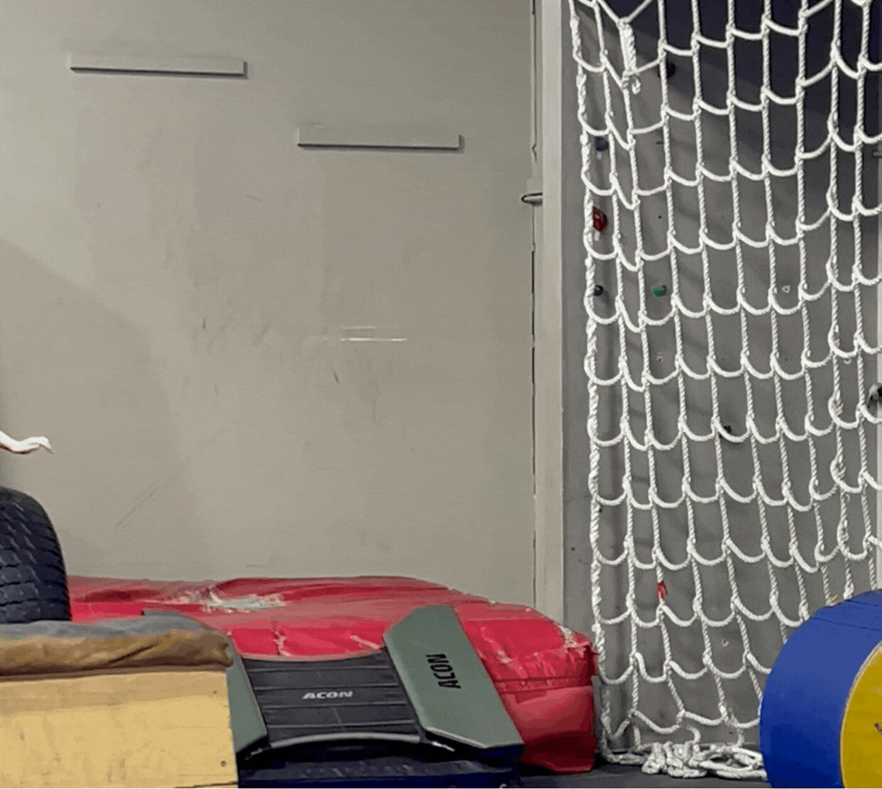
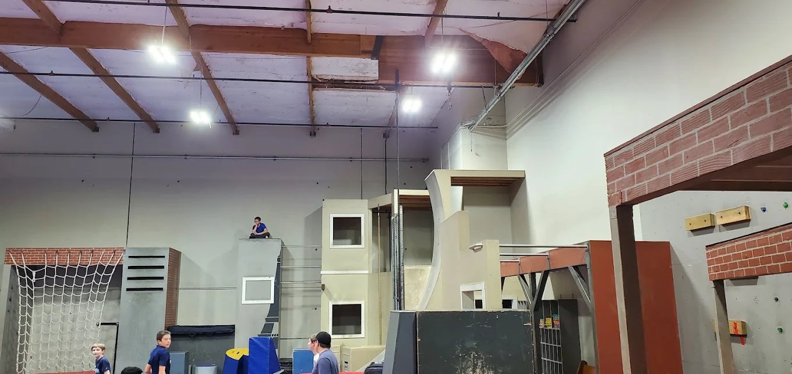
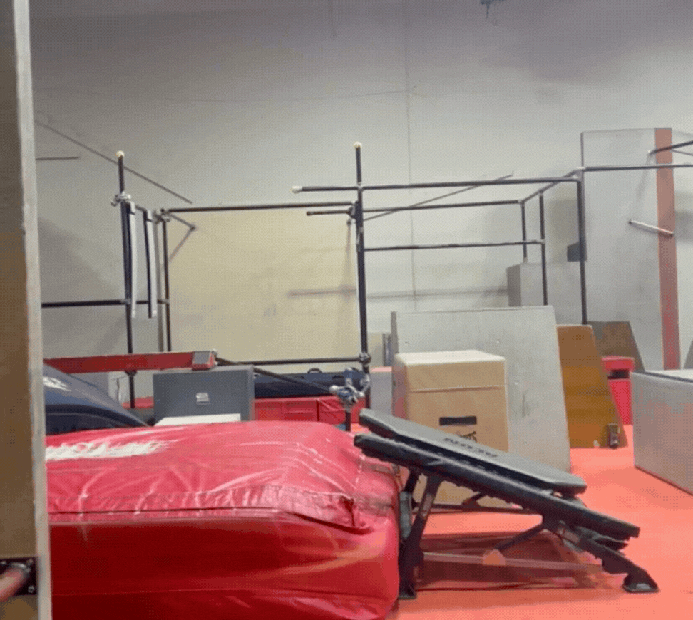
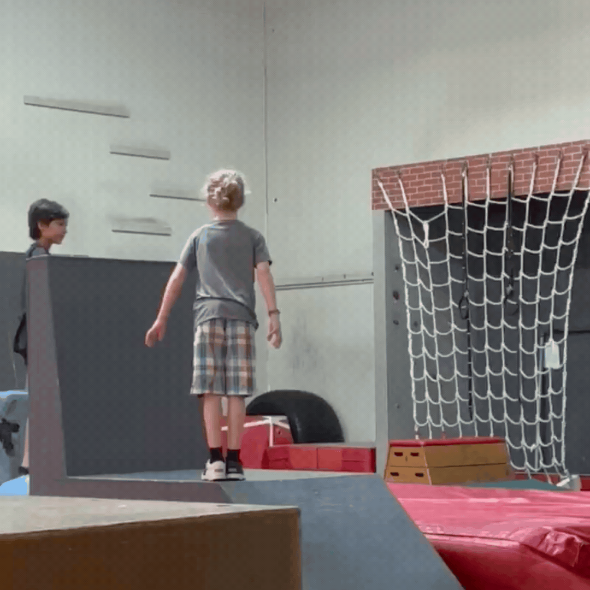

Parkour is a way of getting from point A to B with efficency.
My favorite subsection of parkour is Freerunning meaning flips. This is my hobby and a skill that I specialize in.

There are multiple places to practice or have fun. These places also hold events for certain holidays
and are fun for every one, from kids to adults!

the history of parkour is very vast because of it's wide spread and influence across different cultures and communities.
Parkour is a physical discipline that emphasizes efficient movement through obstacles in one's environment. It was developed in France in the late 1980s and early 1990s by David Belle and others, inspiration from military obstacle course training and the
natural movements of the human body. The practice involves running, jumping, climbing, and other movements
to navigate urban and natural landscapes.

Freerunning is a style of parkour that emphasizes creativity and self-expression through acrobatic movements and tricks.
Freerunning is an acrobatic movement discipline where people navigate through urban or natural environments using creative, expressive tricks like flips, spins, and vaults rather than just focusing on speed.
